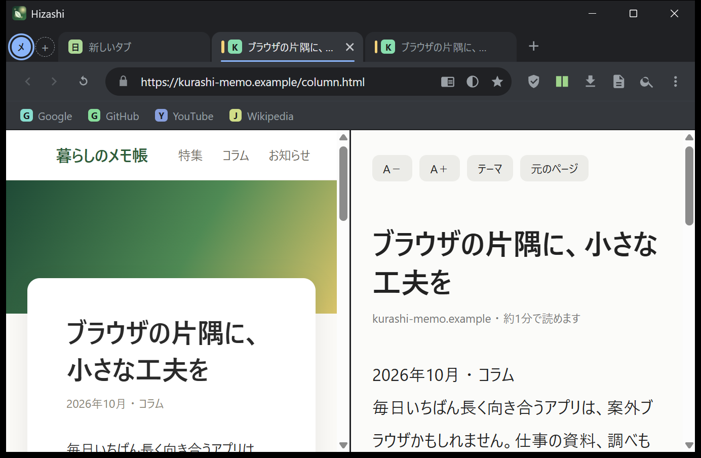
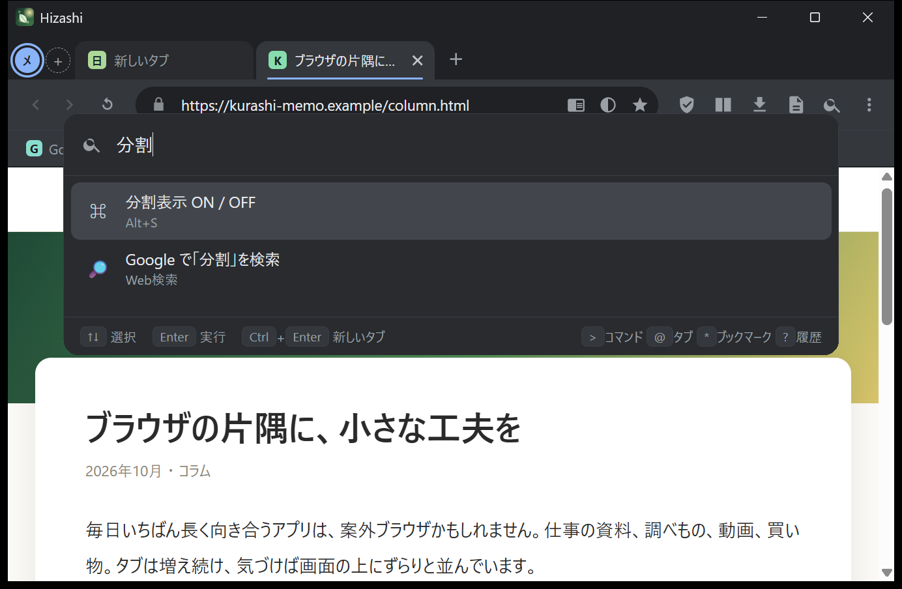
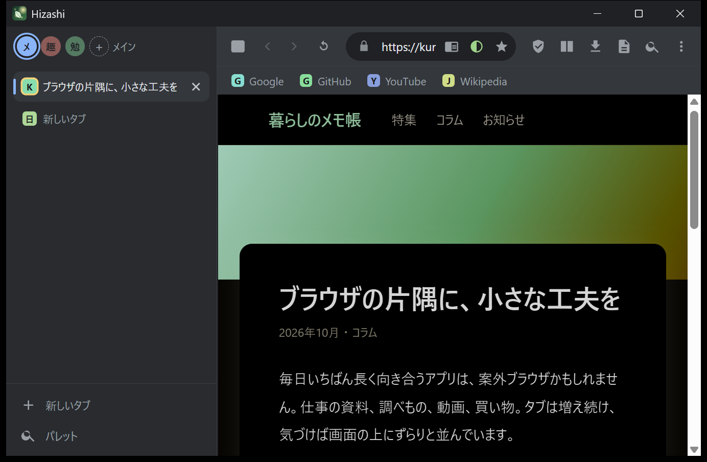
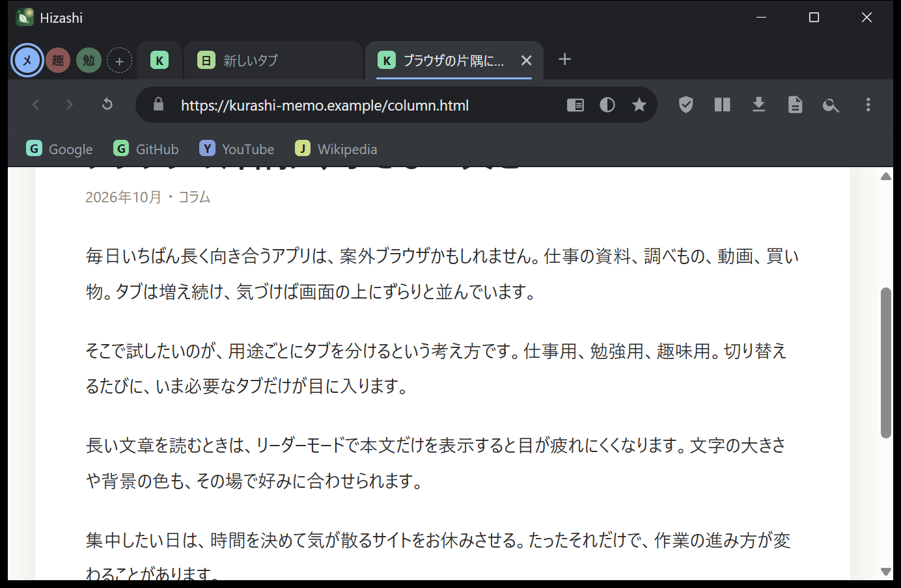
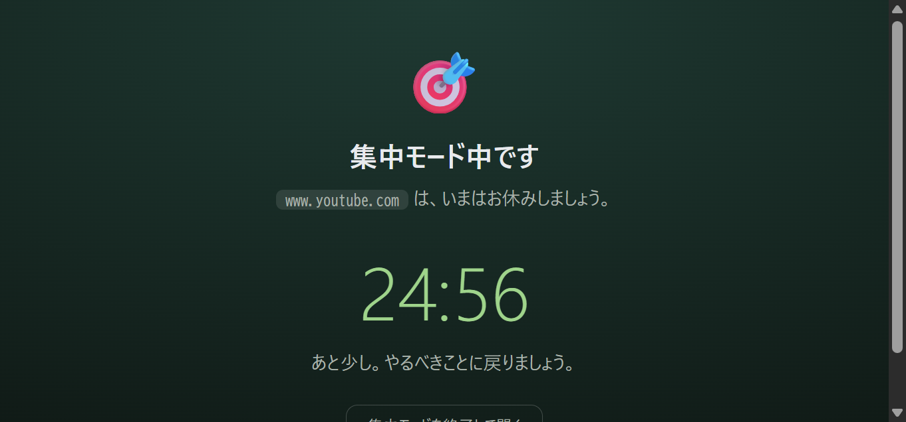

Chromium で動く、
日本語ネイティブの
多機能ブラウザ
毎日使うブラウザに、あると助かる道具をまとめました。
コマンドパレット、ワークスペース、縦タブ、分割表示、集中モード、リーダーモード。
exe を1つダブルクリックするだけで起動します。
Windows 10 / 11（64ビット）・ インストール不要 ・ v1.0.1 ・ ダウンロードの詳細・SHA-256

こんなブラウザです
表示エンジンは Microsoft Edge と同じ Chromium（WebView2）なので、たいていのサイトはそのまま表示できます。その上に、作業しやすさに寄せた機能を載せています。
exe 1つで起動
インストールも、.NET などの別途インストールも不要。ダウンロードしてダブルクリックするだけです。設定やデータは別の場所に保存されるので、exe を入れ替えるだけで更新できます。
操作は Ctrl+K から
タブ・ブックマーク・履歴・全 64 個のコマンドを、1つの入力欄であいまい検索。ショートカットを覚えなくても、たどり着けます。
送信しない・見張らない
Hizashi 自身は、利用状況を一切送信しません。アカウント登録もありません。ソースコードは公開されていて、誰でも確認できます（MIT）。
画面を見てみる
画面はすべて実際の Hizashi です。




主な機能
それぞれの使い方は特長のページと使い方ガイドで詳しく書いています。
使いはじめる
- ダウンロード
上のボタン（またはダウンロードのページ）からHizashi.exeを取得します。 - ダブルクリック
インストールは不要です。初回は、画面が出るまで少し待つことがあります。 - Ctrl+K を押す
コマンドパレットから、ほとんどの操作ができます。
初回は Windows の SmartScreen が警告を出すことがあります。対処のしかたを読んでください。
正直なところ
向いていないこと・まだできないことも、先にお伝えします。
拡張機能は使えません
Chrome ウェブストアの拡張機能には対応していません。よく使う機能（広告ブロックなど）は Hizashi 側に組み込んでいます。
画面は日本語のみ
今のところ、画面の言葉は日本語だけです。翻訳の提案は歓迎します。
署名のない個人開発
コード署名がないため、初回起動時に SmartScreen の警告が出ます。ソースコードと SHA-256 で確認できます。
メモリは Chromium 並み
Electron 版と同じ条件で測ると、メモリ使用量はほぼ同じでした。「省メモリ」ではありません（タブの自動休止で抑えられます）。
Hizashi を使ってみる
無料・オープンソース（MIT）。Windows 10 / 11 用。
作っている人
Hizashi は、ウェブゲームやツールを個人で作っている「かるわか」が作っています。ほかの作品は かるわか GAMES にまとめています。不具合の報告や要望は、GitHub の Issues へどうぞ。